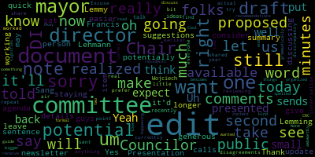
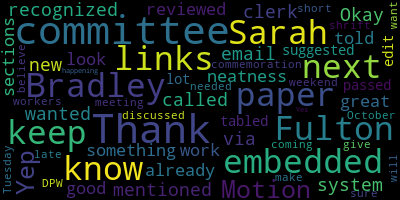

[Leming]: Okay.
[Hurtubise]: Okay.
[Leming]: All right, Justin, you on? Yep. Cool. Ready? Do I have to do a roll call?
[Hurtubise]: You have to do roll calls for all votes. You don't technically have to do a roll call for attendance, but you can if you want to. We'll still let you.
[Leming]: OK. No, no. All right, welcome to the meeting of the Medford Resident Services and Public Engagement Committee. This is the first meeting that I've been in where we are testing out our new AV system. So you might notice some technical difficulties going on with that. I believe what you do, Councilor Callahan-Lazzaro, is press the Yep, Kevin Harrington is kindly instructing. Great. Yeah, if you want to, the way that this works is you put yourself in the queue. And then when I put next on, that means that I can end up sort of choosing people in the order that they press their little mic button. So I could also try to make it so that we could all just talk at once, but I'm going to have to get used to these new controls here. So thank you. The first thing that We are going to go over this session is the draft of the Medford City Council newsletter for October 2024. I ended up, I was the one who drafted this. It essentially just goes over everything that we've covered in the past month. I would like You know, I sent the meeting out, I sent the document out to all my colleagues prior to this, and just invited everybody to offer their comments as some folks are doing right now in this at the moment, like, even as we speak. Councilor Tseng, I would like to also draw your attention just to the governance committee, as well as Councilors Lazar and Callahan to the committees that you chair, just to be sure that the descriptions that I wrote for those are accurate. So if you have any thoughts or questions or ways that you think things should be edited, feel free to let me know. Let's see. Sorry. Kevin, it says that her mic is on. Hold on. Here, but it's.
[Callahan]: In the chamber. Uh huh. Oh, that's looking good. Yeah. Tasty. Um. Just there's a typo at the end of the first general business point and invest $4 million to invest.
[Tseng]: Councilor Leming, if I may. Yes, Councilor Tseng. I was just going to say, I realized I had notes on proposed edits to To the newsletter draft, I realized since I can't make it in person today, it'd be easier for me just to leave my comments as comments and suggestions for you guys to consider. I also see that there are folks here who are potentially here for the second agenda item, which we will not be discussing details of today. I'm just going to give a quick one-sentence summary when Chair Lehmann calls for it.
[Leming]: We're going to, let's, I understand that we're just, I just want to do, finish editing the newsletter and then we will.
[Tseng]: I know, I just, it'll just take us like 20 minutes to edit and I don't want, it'll take us 20 minutes to edit it and I just don't want folks to be staying on longer than they want to be.
[Leming]: Okay. So, all right. So if councillors, that's reasonable enough. If councillors would like to spend a little bit of time editing it while we go through Councilor Tseng's presentation on the next agenda item, then feel free to do so. I understand that Due to some emails flying around, not everybody has been able to do so. But if Councilor Tseng would like to offer a brief presentation on the state, on the Human Rights Commission, then as he wants to, then he can go. Then feel free to take it away.
[Tseng]: Thank you, Chair Lemmy. Presentation is very generous of a word, as I told you, Chair. I really don't have much of an update for this committee. I'm still working through it. I sat down with the mayor and our DI director, Francis Wojciech, recently to talk through their ideas and potential disagreements on it. They are still reviewing the draft that I shared with this committee. earlier in the year with some potential edits that they have told me that they would want to make, but it's very much still in conversation and I don't have anything for this committee right now or for the public. And I'll let everyone know once those edits are available, but they are currently not available.
[Leming]: Thank you, Councilor Tseng. So for the very brief update on the State of the Human Rights Commission, we will move on. Are there any other comments from Councilors? Okay, we'll move on to public comment. I see Steve Schnapp's hand raised on Zoom. I'm just gonna ask him to unmute.
[Schnapp]: Thank you. I just was curious if the draft that Justin presented to the mayor. If that is available.
[Tseng]: No, that's, oh, sorry.
[Leming]: No, no, go, go for it. Without that.
[Tseng]: Sorry, can you repeat that one more, once more?
[Schnapp]: I heard you say that you presented a draft to this committee and then met with the mayor.
[Tseng]: I presented that draft to the DI director and the mayor as well. And the DI director and I had worked on the same document. documents the director had put in some notes on potential discrepancy and that was sent to the mayor.
[Schnapp]: Is that public record?
[Tseng]: No. Uh, but, but once the mayor sends back, um, any actual edits to the document. So right now there are no edits to the documents, no real edits documents that, um, presented to the committee. But, um, one air sends back to edits. I will share them all with, uh, with the committee and with the public.
[Leming]: Thank you. Is there any other public comment? Anyone else who'd like to speak? All right. Seeing none, do we have a motion on the floor regarding this paper?
[Lazzaro]: Motion to keep the paper in committee and keep paper in committee.
[Leming]: Second. Motion by Councilor Lazzaro to keep the paper in committee, seconded by Councilor Tseng. Mr. Clerk, when you're ready, please call the roll.
[Hurtubise]: Councilor Lazzaro? Yes. Councilor Scarpelli is absent. Councilor Tseng? Yes. Chair Leming.
[Leming]: Yes, for an affirmative, none absent, the motion passes. Would also like to note for the AV folks that there might need to be a better system for roll call in the future as well. So it's just kind of because it's good Yeah, it's better to be able to do it quickly instead of have everybody queue up each and every time. So there's kind of a note for the future with this new audio-visual system we have. But in any case, I'd like to thank everybody for attending for the brief update. And I hope that we'll be able to have something public as soon as we can on the Human Rights Commission. Moving back to the newsletter draft, which we can hopefully hammer out and set a record for pretty fast committee meeting. I'm just going to share that once again to Zoom. Okay. So it looks like we just have a couple of typos, which are entirely my fault. So I'm just going to go ahead and accept a few of these. Let's see. And if any counselor has anything in particular that they'd like to point out in the newsletter or discuss, then just feel free to raise your hand. The counselor is saying, I see that your hand is raised. Is that from before?
[Tseng]: Oh, sorry.
[Leming]: That was from before. Okay, cool.
[Lazzaro]: Am I, I don't know. Yep, you're recognized. I don't know why I'm called on with the new system. Okay. Thank you. I just wanted to, via email through the clerk, I had mentioned something about the links being embedded for neatness. I was told that all the links would be embedded, which is great. And I have already reviewed the sections on the committees. They look good to me. So thank you for your work on this.
[Leming]: The links I put there solely to The links I put there mainly to just help myself later when I go into latech and create it and format it myself.
[Callahan]: I've looked through everything and it looks good. I know that Councilor Tseng is updating just the governance committee one, but I think my committee is good and the rest of it looks good to me. So thank you so much for putting it together.
[Leming]: Thank you. And I'm just going through this through and accepting Councilor Tseng's edits. It's clear that Harvard Law student is much better at editing texts than a very tired scientist. Unequally tired. A very tired Harvard Law student is clearly better with the English language.
[Tseng]: Excuse me as I just try to find the words for this one point.
[Leming]: All right, that looks... Wait, Councilor Tseng, is this comment that I'm seeing here...
[Tseng]: Yeah, that's a proposed edit to what's there. You can see if you prefer it. I just think it's a little bit more organized and more formal in tone. But I'll let the committee discuss it since it's a bigger edit.
[Leming]: OK.
[Tseng]: Cool.
[Lazzaro]: I like the suggested edit a lot. Thank you.
[Leming]: Cool. All right. And I understand that I was trying to remember that meeting following the four hours and 42 minute Q&A session, which of the resolutions from the October 15th meeting we tabled. And I asked the clerk earlier, and he said that According to his memory, we did not table the commemoration of Sarah Bradley Fulton Day, but we did table the commemoration of the two DPW staff members who returned a lost wallet for the next regular meeting. Is that correct?
[Hurtubise]: I know about the lost wallet on this table, but I would have to check the records for the notes for the records to see about the other one. I think it was passed, but I'm not entirely sure.
[Leming]: Um, at the commemorations and acknowledgement section, uh, we, I put the, I put the two, uh, commemorations from the October 15th meeting in there, but we tabled a couple of stuff really, really quickly. And I was having trouble remembering exactly which ones we table and which ones we very quickly passed. So, um, I would, do you want me to run down and check?
[Lazzaro]: We passed Sarah Bradley Fulton. We tabled the commemoration of the DPW workers that will be discussed, I believe, at the next October meeting on Tuesday. Just because it was so late and we didn't want to give it short shrift, but Sarah Bradley Fulton was coming up that next weekend, so we needed to make sure it was happening.
[Leming]: Can we just, how do we make these all just so that people can unmute themselves? How do we? No, no, I mean, this is just a regular time.
[Callahan]: Yeah, just, didn't we also have that commemoration of Larry Lepore? But I'm wondering, do we, in the past, we've left those off of this. I think that is accurate that we have not put in like the personal ones about, you know, I started so I started I started doing that because I figured it was it was nice.
[Leming]: So, in the, you know, in some of the earlier ones we might have accidentally left off. a couple of them or not put all of them on there especially because the initial one was covering a four-month period and it was pretty lengthy as it was but um I think I think moving forward it's probably it would just be nice to show people um who and all was commemorated at these these different meetings.
[Callahan]: We'll want to put Larry Lepore in here.
[Leming]: Sorry?
[Callahan]: Larry Lepore.
[Leming]: When was that passed? What date was Larry's passing? Really? Okay.
[Hurtubise]: Resolution on our suspension.
[Leming]: Yeah. It's hard for me to find the records of the ones I can get the date.
[Hurtubise]: Yeah. I mean, I know that the date of the resolution was the 15th, but hang on, give me a second.
[Leming]: Well, the date of the resolution would have been the 15th, but the date of his passing. Yep. OK. October 14. OK. Does this seem like an appropriate addition? OK. Great. Do we have a motion on the floor? Chairman. Was that a second Councilor Tseng?
[Tseng]: That's a second. I just wanted to note that I put in a few more, just small edits. None of them are really to the content besides there's something small at the end, the residents guide. I just kind of like spelled it out. Okay. All right.
[Leming]: I'm just going through and looking at it and accepting.
[Callahan]: And I actually do have one like to me. This seems grammatically awkward. This section that I like we started discussions on the city charter review process, including setting a timeline as we expect the Charter Review Committee's recommendations to like to me there has to be an ending to that sentence, but.
[Tseng]: I think grammatically this is correct, but I yeah, it does read awkwardly. We can edit it.
[Callahan]: I'm not sure what you mean as we expect them to continue to arrive or as we expect.
[Tseng]: Well, as just signifies that two things are happening at the same time. So we do expect the CRC's recommendations, but we can say to as we expect to receive.
[Callahan]: Yes, thank you.
[Leming]: public vote in. Okay.
[Callahan]: I move to approve and send to, just to approve.
[Leming]: Motion by Councilor Callahan to approve and release. Do we have a second? Seconded by Councilor Lazzaro. Mr. Clerk, when you're ready, would you please call the roll?
[Hurtubise]: Councilor Callahan?
[Callahan]: Yes.
[Hurtubise]: Councilor Lazzaro? Councilor Scarpelli is absent. Councilor Tseng? Yes. Chair Leming?
[Leming]: Yes. Four in the affirmative, one absent. The motion passes and we have another newsletter. Do we have any other motions on the floor?
[Callahan]: Motion to adjourn.
[Leming]: Second. Seconded by? On the motion to adjourn by Councilor Lazzaro, seconded by Councilor Callahan. Mr. Clerk, when you're ready, would you please call the roll?
[Hurtubise]: Councilor Kelly.
[Lazzaro]: Yes.
[Hurtubise]: Councilor Lazzaro. Yes. Councilor Scarpelli is absent. Councilor Tseng. Yes. Chair Leming.
[Leming]: Yes. For the affirmative one absent, the motion passes. Thank you everybody and have a wonderful evening.
|
total time: 11.68 minutes total words: 1317 |
total time: 1.28 minutes total words: 234 |
total time: 3.69 minutes total words: 527  |
total time: 1.09 minutes total words: 160  |
{kind=link}
{kind=link}
{kind=link}
{kind=link}